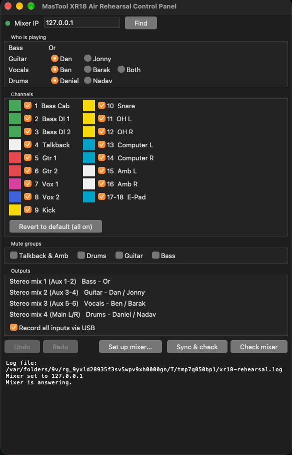

How the signal flows, what every setting does, what matters to you, and how the app keeps everyone's mix safe.
Why this exists
From no in-ears to everyone hearing their own mix
Until now we had no in-ear monitoring (IEM) system. Now each of us gets our own mix, straight into our ears.
Before: no IEM system
Everyone heard whatever the room gave them
Hard to hear yourself over the drums and amps
Turn up to hear yourself, everyone else turns up too
No talkback, no way to shape what you hear
Now we can
Hear our own mix: more of yourself, less of what you don't need
Play quieter: lower stage volume, easier on the ears
Talk to each other through the talkback mic
Play to the backing track and E-Pad: in every mix
Swap players freely: the app saves each player's mix and brings it back when they return
Record every input to the laptop over USB
Mixer: Behringer XR18 (X AIR). App: small Mac/Windows program on the laptop, talks to the mixer over its Wi-Fi.
The big picture
How sound flows through the rig
1 · Sources
Bass: cab mic + 2 SansAmp DIs
Guitar: 2 mics/DIs
Vocals: 2 mics
Drums: kick, snare, 2 OH
Talkback + 2 room mics
Computer (USB) + E-Pad
→
2 · Channel strip (per input)
Low-cut filter: removes rumble below a set frequency
48V: power for condenser mics (overheads, room mics)
On/off switch: the app's channel checkboxes
Mute group: silence a whole section at once
Pan: Gtr 1 left, Gtr 2 right, rest centre
→
3 · Sends (pre-fader)
Each channel is sent to every in-ear mix at its own level
Your send levels = your mix. Changing yours doesn't touch anyone else's
The app saves and restores these levels per player
→
4 · In-ear mixes
Aux 1-2 Bass: Or
Aux 3-4 Guitar: Dan / Jonny
Aux 5-6 Vocals: Ben / Barak
Main L/R Drums: Daniel / Nadav
USB 1-18 → laptop: records every raw input
The laptop app sits on top of all this: it sends commands to the mixer over Wi-Fi and reads back what everyone is hearing.
Inputs
What's plugged in where
Ch
Name
Plugged in
Low-cut
48V
Pan / link
Mute grp
1
Bass Cab
Sennheiser e609/e906 on the cab (dynamic)
50 Hz
-
C
4 Bass
2-3
Bass DI 1 / 2
Or's two SansAmp outputs
off
-
C
4 Bass
4
Talkback
Talkback mic
120 Hz
-
C
1 Talk & Amb
5-6
Gtr 1 / Gtr 2
Guitar mic / DI 1 and 2
80 Hz
-
L / R (not linked)
3 Guitar
7
Vox 1
Main vocal mic
100 Hz
-
C
-
8
Vox 2
Second vocal mic (duets)
100 Hz
-
C
-
9
Kick
Kick mic
30 Hz
-
C
2 Drums
10
Snare
Snare mic
80 Hz
-
C
2 Drums
11-12
OH L / R
Overhead condensers
120 Hz
yes
linked stereo
2 Drums
13-14
Computer L / R
Nothing in the jack: comes from USB 1-2
off
-
linked stereo
-
15-16
Amb L / R
Room mics (when installed)
80 Hz
when on
linked stereo
1 Talk & Amb
Aux
E-Pad
E-Pad L/R into Aux In
-
-
stereo
-
Changed from the old patch sheet: talkback moved to ch 4 and everything from guitar on moved up one. The XR18 can only link odd-even pairs (1-2, 3-4 … 15-16), so the stereo pairs had to land on 11-12, 13-14 and 15-16.
Outputs
Which jack feeds whose in-ears
Output jack
Mix
Who
Aux 1-2 stereo
Bass
Or
Aux 3-4 stereo
Guitar
Dan or Jonny
Aux 5-6 stereo
Vocals
Ben or Barak
Aux 5 + Aux 6 mono
Duet ("Both")
Aux 5 Ben, Aux 6 Barak
Main L/R stereo
Drums
Daniel or Nadav
USB send 1-18
Recording
Laptop / DAW
USB return 1-2
Backing track
Into ch 13-14, everyone hears it
One mix per role, not per person
There are 4 in-ear mixes. Whoever is in the role uses that jack. The app swaps the content of the mix when the person changes.
Main L/R is not a PA
In this setup Main L/R is the drummer's in-ears. The channel faders set the drummer's mix, so don't use them as a "master mix".
Part 1
What matters to you
One slide per role. Find yours.
Bass
Your in-ears
Aux 1-2 · stereo
Player
Or
Your channels
1 · 2 · 3
Or: three bass channels, one fixed seat
Ch 1 Bass Cab
Dynamic mic on the cab (no 48V). Low-cut at 50 Hz: the cab mic is for grit and character
Ch 2-3 Bass DI
Your two SansAmp outputs. No low-cut: this is where the real low end lives
Starting mix
Your 3 channels at 0 dB, talkback/room -20, everything else -10, master -20
Mute group 4
Silences all three bass channels in every mix at once (tuning, breaks)
Hi-Z: inputs 1-2 on the XR18 are always Hi-Z (built into the hardware, there's no switch). That's fine for the cab mic and the SansAmp DIs: just set the gain at the mixer.
Guitar
Your in-ears
Aux 3-4 · stereo
Players
Dan or Jonny
Your channels
5 · 6
Dan / Jonny: each of you keeps your own mix
Ch 5-6 Gtr 1 / 2
Panned hard left / right, not linked. Low-cut 80 Hz, just under the low E (82 Hz)
On a swap
Dan's current mix is read from the mixer and saved, then Jonny's saved mix is loaded on Aux 3-4. Swap back and Dan's returns exactly
First time ever
No saved mix yet: you get the starting mix (guitars 0 dB, rest -10, talkback/room -20, master -20)
Mute group 3
Silences both guitar channels everywhere
Adjust your mix as usual (X AIR on a phone/tablet). The app picks up whatever you set: every 10 s, on every swap and when the laptop app closes.
Vocals
Your in-ears
Aux 5-6 · stereo
Duet
Aux 5 Ben · Aux 6 Barak (mono each)
Players
Ben / Barak / Both
Ben / Barak: solo or duet
One singer
Sings on Vox 1 (ch 7). Ch 8 is switched off automatically. Mix is stereo on Aux 5-6
"Both" (duet)
Ch 7 and 8 both on. Aux 5-6 is unlinked into two mono mixes, one each, so you each hear your own balance
Earphones
Duet: Ben on Aux 5, Barak on Aux 6. Back to one singer: 5-6 re-link into stereo
Low-cut
100 Hz on both mics: kills handling thumps, breath pops and the boomy close-mic effect
Mute groups
Vocals are in none: muting a section never silences the singer
Each singer's mix is saved under their own name, so Ben gets Ben's balance whether solo or in a duet.
Drums
Your in-ears
Main L/R · stereo
Players
Daniel or Nadav
Your channels
9 · 10 · 11 · 12
Daniel / Nadav: your mix is the channel faders
Your mix
Main L/R, set by the channel faders (everyone else uses aux sends). Same save/restore on swap
Kick (9)
Low-cut 30 Hz: only the sub-rumble goes, all the thump stays
Snare (10)
Low-cut 80 Hz: cleans out kick and bass bleed under the snare
OH L/R (11-12)
Condensers with 48V, linked stereo, low-cut 120 Hz: cymbals and kit image, the lows come from the kick mic
Mute group 2
Silences the whole kit (9-12) in every mix
Anyone pulling a channel fader in X AIR is changing your ears. Ask people to touch only their own aux sends.
Whoever runs the laptop
The operator's job: pick people, flip switches, check
Connect
Join the XR18 Wi-Fi
Open XR18 Rehearsal from the Desktop
Find fills in the mixer IP (remembered)
Dot next to the IP: ● mixer answers, ● it doesn't (checked every 3 s)
During rehearsal
Who is playing: click a name, the swap is instant
Channels: tick on/off, applied instantly
Mute groups: silence a section
Undo / RedoCmd/Ctrl+ZCmd/Ctrl+Y, 20 steps
When something's off
Check mixer: lists differences, changes nothing
Sync & check: fixes only what differs
Set up mixer…: full reset of the setup (asks first)
Hover anything for a tooltip
Close the app normally at the end: it takes one last snapshot of everyone's mix. If the mixer is already off, it closes instantly and keeps the last good save.
Part 2
Filters: low-cut, high-cut, high-pass, low-pass
Four names, two ideas. And why every channel has the number it has.
Filters 101
The name says what's allowed through
High-pass = Low-cut
Highs pass, lows are cut. Used on 12 of our channels.
Low-pass = High-cut
Lows pass, highs are cut. The app sets none.
Cutoff: the frequency where the filter starts working (about 3 dB down). It isn't a wall: below it the level slopes away, more the further you go.
Use cases: take hiss or fizz off a bass DI, cymbal bleed off a kick mic, harshness off something bright. If we ever need one, it's done by hand in X AIR Edit's EQ.
Filters on our channels
Where each instrument lives, and where we cut
Bars = roughly where the useful sound is. Red shading = what the low-cut removes. Log scale, like your ears.
Why these numbers
Every low-cut has a reason
Channel
Cut
Why
Kick
30 Hz
Only sub-rumble nobody hears. Thump (~50-100 Hz) untouched
Bass Cab
50 Hz
Lows come from the DIs. The cab mic adds grit
Bass DI 1-2
off
The foundation. Low E is 41 Hz, keep all of it
Gtr 1-2
80 Hz
Lowest guitar note is 82 Hz. Below that is only mud and bass bleed
Snare
80 Hz
Body is 150-250 Hz. Below is kick and bass bleed
Amb L/R
80 Hz
Room rumble, AC, footsteps
Vox 1-2
100 Hz
Handling noise, pops, boomy close-mic effect
Talkback
120 Hz
Speech should be clear, not full
OH L/R
120 Hz
Overheads = cymbals + kit picture. Kick mic does the low end
Computer, E-Pad
off
Already-mixed full-range sources, no stage rumble
Why it matters more in in-ears
Low rumble from every open mic piles up. You can't hear most of it, but it eats headroom, muddies the mix and tires your ears. Cutting it means you can hear everything at a lower volume.
Rule of thumb
Cut just below the lowest note the source really plays. The more mics share a range, the more it pays to clean it up.
The mixer's low-cut range is 20-400 Hz. The app writes these values on Set up mixer and checks them on Check mixer.
Part 3
How everything is managed
Sends, swaps, saving, switches, recording and safety nets.
Pre-fader sends
Why your mix is only yours
Every channel has a separate send level into each in-ear mix
Sends are tapped pre-fader: moving the channel fader does not change Or's, Dan's or Ben's ears
The drummer's mix is the fader path itself (Main L/R)
Each in-ear mix also has its own master level
What the app remembers for each player: the level of all 17 inputs in their mix, plus their master
Every player's own channels start at 0 dB, so you hear yourself first. Everything else starts at -10, talkback and room mics at -20.
The swap
What happens when you click "Jonny"
1
Read
The app asks the mixer for Dan's current levels on Aux 3-4: 17 sends + master
2
Save
Stored under "Dan" in the state file on the laptop
3
Dip
Aux 3-4 master goes to silence first, so nothing blasts while levels change
4
Load
Jonny's saved sends are written (or the starting mix if he's new)
5
Restore
Master comes back up to Jonny's saved level
Only that role is touched
Or, the singer and the drummer don't hear a thing change. Their sends aren't written.
If the mixer doesn't answer
Dan's mix is not overwritten with nothing. The swap is marked pending, and Jonny's mix loads as soon as the mixer answers again (checked every 10 s).
Saving & memory
No Save button. Ever.
10 s
Autosave
Every 10 seconds the app reads what every active player hears and stores it. Tweak your mix and it's kept.
20
Undo steps
Lineup changes and channel switches can be undone/redone 20 steps back. Survives restarts.
1
File on the laptop
~/.xr18-rehearsal/state.json: mixer IP, lineup, every player's mix, switches, undo history. Written safely: a crash can't leave a half-written file.
Saved: mix levels per player, lineup, channel on/off, mute groups, USB recording toggle, mixer IP.
Also a log (xr18-rehearsal.log) of every command sent. Handy to send to Dan if something acts up.
Switches
Channel on/off, room-mic power and mute groups
Channel checkboxes
One per channel, applied instantly, undoable. Revert to default turns them all on. Picking one singer turns ch 8 off; "Both" turns 7 and 8 on.
Room mics (15-16) and 48V
They're condensers and need 48V. To avoid a pop in your ears: On: 48V on → wait 2 s → unmute Off: mute → 48V off
Mute groups
Silence a section in every mix at once without touching the checkboxes. Unmute and it's exactly as before.
Group
Silences
Channels
Typical use
1
Talkback & Amb
4, 15-16
Cut the chatter and room noise
2
Drums
9-12
Drummer swap, sticks clattering
3
Guitar
5-6
Tuning, pedal fiddling
4
Bass
1-3
Tuning, cable swaps
Duet mode
Two singers, two separate mixes
Pick Both under Vocals: Aux 5-6 is unlinked, ch 8 switches on, Ben's mix loads on Aux 5 and Barak's on Aux 6
Physically: Ben's in-ear pack on Aux 5, Barak's on Aux 6
Pick one name again: 5-6 re-link into stereo and that singer's mix loads
Each singer's levels are saved under their name and follow them between solo and duet
Recording
Every input, straight to the laptop over USB
The XR18 is an 18-in / 18-out USB audio interface. It has no USB-stick recorder, so it records into a DAW (Reaper, Logic, Ableton, Audacity…)
Record all inputs via USB (on by default): USB 1-16 carry the 16 inputs, 17-18 the E-Pad
Recorded raw, before any filter, so you can mix it later however you like
Untick it to set the USB routing by hand in X AIR Edit instead
Windows needs the Behringer X-USB ASIO driver. Mac works out of the box
The catch: backing track
Ch 13-14 play the computer via USB return 1-2. USB sends 13-14 still carry the empty input jacks 13-14. To have the backing track in the recording, record the computer playback inside the DAW itself.
Kept in place
If someone changes the USB routing in X AIR Edit, Check mixer flags it and Sync & check puts it back.
The app

One window, top to bottom
Mixer IP + dot
Where the mixer is, and whether it's answering
Who is playing
Lineup pickers. A click = save old mix, load new one
Channels
Colour-coded on/off per channel, same colours as the mixer
Mute groups
Talkback & Amb · Drums · Guitar · Bass
Outputs
Which jack carries whose mix right now + USB recording toggle
Buttons
Undo · Redo · Set up mixer… · Sync & check · Check mixer
Message area
What just happened, in plain words
All mixer traffic runs in the background, so the window never freezes if the mixer is slow or out of range.
Three buttons, three jobs
Set up vs Sync vs Check
Button
What it does
Touches mixes?
When
Check mixer
Reads every setting back (names, colours, links, routing, 48V, low-cuts, pans, taps, mute groups) and lists what differs
No. Changes nothing
Start of every session
Sync & check
Same read, then writes only the values that differ, then checks again
No. Mixes and faders left alone
Check found something
Set up mixer…
Writes the whole setup, then loads the current lineup's saved mixes. Asks first
Yes. Reloads the current players' mixes
First time, or after a scene reset
Day to day you don't need Set up. Lineup picks, checkboxes and mute groups go to the mixer the moment you click.
What "drift" looks like: someone renames a channel or flips 48V in X AIR Edit. Check lists it; Sync puts it back.
Safety nets
Built so nobody gets a blast in their ears
Situation
What the app does
Loading a mix
Master to silence → sends → master up to the saved level. No burst at the old level
Room mics on / off
48V first, 2 s settle, then unmute. Off: mute, then 48V off. No pop
Linked stereo pairs
Pan set only on the odd channel and kept centre (it works as balance), so stereo stays stereo
Mixer not answering on a swap
Old mix not overwritten; new mix loads automatically when the mixer is back
Mixer gone when you close the app
Closes instantly, keeps the last good save
Full setup
Asks for confirmation first: it resets names, routing and levels
Something crashes in the background
The window shows the error, the full details go into the log file
Under the hood (for the curious)
How the app talks to the mixer
OSC over UDP, port 10024: the same remote protocol the X AIR apps use. Messages look like /ch/05/mix/03/level 0.75
Find broadcasts /xinfo; the mixer replies with IP, name, model, firmware
Faders are 0-1 on the wire; the app converts dB both ways using the X-Air fader curve
Sends are paced 2 ms apart so the mixer isn't flooded
One background worker thread does all mixer traffic; the window stays responsive
Python, standard library only: nothing to install on the laptop except Python itself
The whole setup lives in one file (plan.py) as data. The patch sheet and setup map are generated from it
Fake XR18 simulator for testing without the hardware
Tests run on Mac, Windows and Linux on every change (GitHub Actions)
Command line too: --find, apply, check, lineup, --dry-run
Plan file → commands → mixer. Check mode runs the same list as questions instead of commands, which is why Check and Set up can never disagree about what "correct" means.
Boundaries
What the app doesn't touch
Still done by hand (X AIR Edit / the rack)
Gain / trim on each preamp: set levels at the mixer
EQ, compression, gate, effects: untouched
Hi-Z on inputs 1-2: always on in the hardware, nothing to set
Cables: the app can't see them. Use the patch sheet
Your in-ear pack volume knob
Not remembered per player
Only levels are saved per player (17 inputs + master)
Pans are part of the fixed setup, the same for everyone
Any EQ on a bus is shared by whoever holds that role
Rule for everyone: touch only your own aux sends. Channel faders are the drummer's mix; channel settings are the shared setup.
Rehearsal day
Checklist
1 · Patch per the sheet: talkback on 4, jacks 13-14 empty
2 · Laptop on the XR18 Wi-Fi, open the app, dot green